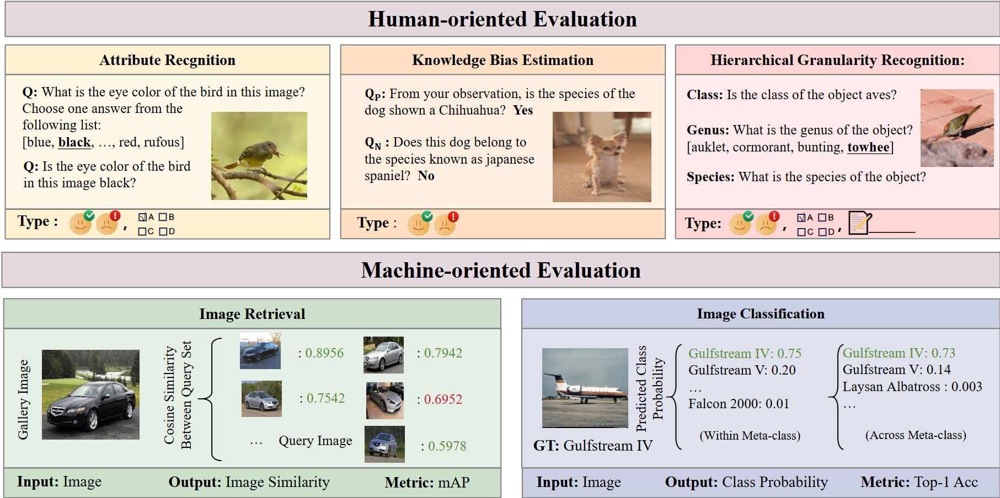

Benchmarking Large Vision-Language Models on Fine-Grained Image Tasks: From Evaluation to Diagnosis
1School of Computer Science and Engineering, School of Intelligence Science and Engineering, and Key Laboratory of New Generation Artificial Intelligence Technology and Its Interdisciplinary Applications, Southeast University, China
2Alibaba Group ·
3Wangxuan Institute of Computer Technology, Peking University, China
4University of Copenhagen, Denmark
† Corresponding Author
Recent advancements in Large Vision-Language Models (LVLMs) have demonstrated remarkable multimodal perception and reasoning capabilities. While numerous benchmarks have evaluated LVLMs from holistic or task-specific perspectives, their capabilities on fine-grained image tasks—fundamental to computer vision—remain insufficiently understood. To address this gap, we introduce FG-BMK, a comprehensive fine-grained evaluation benchmark containing 1.01 million questions and 0.28 million images, covering diverse scenarios from common object-centric domains to specialized domains. FG-BMK jointly evaluates dialogue-level fine-grained semantic recognition and feature-level visual discriminability through human-oriented and machine-oriented paradigms, enabling diagnostic analysis of whether LVLM failures arise from insufficient visual representations, weak visual-to-semantic grounding, or limited fine-grained knowledge. Through extensive experiments on a diverse set of representative LVLMs/VLMs, we find that current LVLMs remain inadequate fine-grained recognizers, with failures arising from intertwined bottlenecks in visual representations, semantic grounding, modality alignment, and category-level knowledge. We further analyze training-design factors for improving fine-grained capabilities and examine how visual and linguistic perturbations affect LVLM predictions—offering guidance for future data construction and model design.
FG-BMK probes fine-grained ability through two complementary evaluation paradigms—human-oriented dialogue recognition and machine-oriented feature discriminability—and turns them into a step-by-step diagnosis that pinpoints where, and why, LVLMs fall short.

Hierarchical granularity recognition (human-oriented). Values are Multiple-Choice / True-or-False accuracy; click CUB-200 or iNat2021 to expand taxonomic levels.
Spanning multiple domains · 0.28M+ images · 1.01M+ questions.
Seven representative vision backbones across twelve fine-grained datasets. Contrastively-trained encoders (EVA-CLIP, DINOv2, InternVL) consistently lead.
@article{yu2026fgbmk,
title = {Benchmarking Large Vision-Language Models on Fine-Grained Image Tasks: From Evaluation to Diagnosis},
author = {Yu, Hong-Tao and Xie, Chen-Wei and Peng, Yuxin and Belongie, Serge and Wei, Xiu-Shen},
journal = {arXiv preprint arXiv:2606.19053},
year = {2026}
}
@inproceedings{yu2026fgbmk_iclr,
title = {Benchmarking Large Vision-Language Models on Fine-Grained Image Tasks: A Comprehensive Evaluation},
author = {Yu, Hong-Tao and Peng, Yuxin and Belongie, Serge and Wei, Xiu-Shen},
booktitle = {International Conference on Learning Representations (ICLR)},
year = {2026}
}